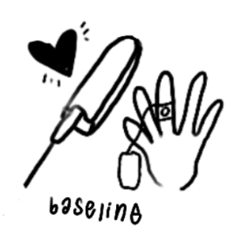
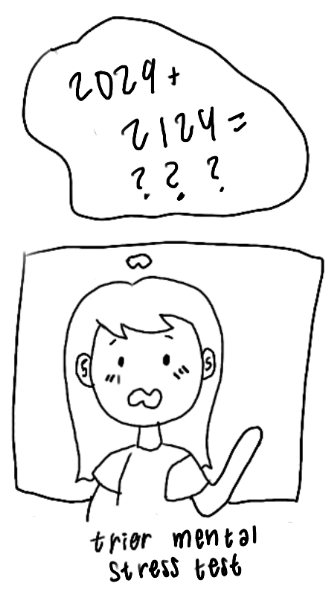
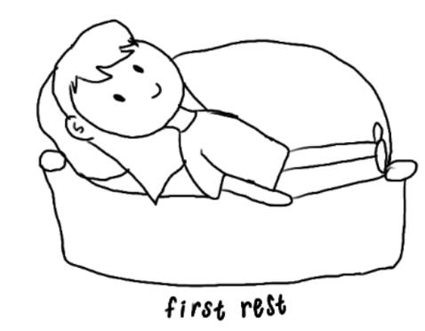
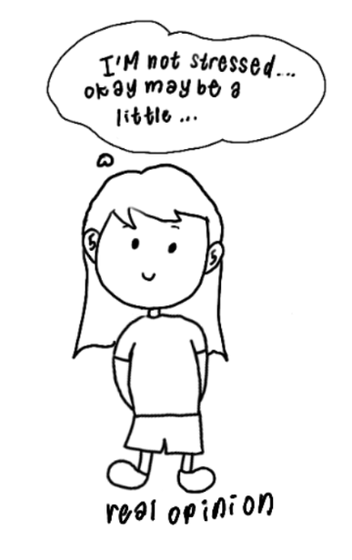
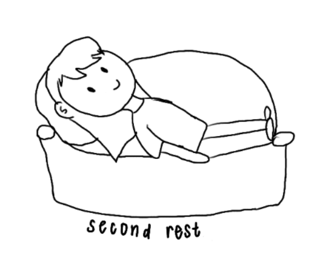
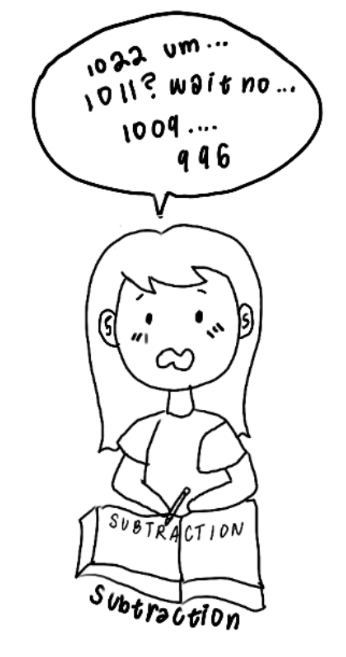

Hongn, A., Bosch, F., Prado, L., & Bonomini, P. (2025). Wearable Device Dataset from Induced Stress and Structured Exercise Sessions [Data set]. PhysioNet. (Version 1.0.0). https://doi.org/10.13026/zzf8-xv61
Understanding how well people can assess their own stress levels is crucial for mental health awareness and effective stress management. While we often rely on self-reported stress measures, these subjective assessments may not always align with our body's physiological response to stressful situations. This disconnect between perceived and actual stress levels can impact our ability to recognize when we need to take action to manage our stress effectively.
This interactive visualization compares an observed stress metric, derived from physiological signals, with self-reported stress levels. We focus on a stress induction protocol from the Wearable Device Dataset from Induced Stress and Structured Exercise Sessions (Hongn et al., 2025).
Various measurements, including heart rate, electrodermal activity, and blood volume pulse, were collected through a wristband during an experimental protocol. Each phase of the protocol is designed to either induce or alleviate stress through specific tasks and recovery periods. The protocol is broken down into 7 phases:

Baseline: A 3-minute period at rest used to establish a physiological reference point.

TMCT: A modified Trier Mental Challenge Test that involves time-pressured mathematical tasks designed to induce acute stress.

First Rest: A 5-minute recovery period following the TMCT, allowing participants to begin returning to baseline levels.

Real Opinion: Participants share their genuine opinions on controversial topics, introducing a social-cognitive component to the stress response.
Opposite Opinion: Participants argue against their true beliefs, adding cognitive dissonance and further stress.

Second Rest: A second recovery period after the opinion tasks to help reduce stress levels before the next challenge.

Subtract: Participants were asked to subtract 13 from 1022 until they reached 0, designed to elicit an additional stress response.
No Phase: Data segments that do not correspond to any structured phase, often representing transitional or unclassified periods.
Explore the visualization below to see how the objectively measured stress levels compare with participants' self-assessments across these experimental conditions:
This project explores the differences between self-reported stress levels and actual stress indicators. Using data visualization techniques, we analyze how individuals perceive their stress compared to physiological or behavioral stress markers.
We use survey data where participants rate their stress on a scale from 1-10, alongside physiological measures such as heart rate (HR), temperature (TEMP), blood volume pulse (BVP), and electrodermal activity (EDA). Our findings highlight discrepancies between subjective perception and biological responses, providing insights into stress awareness and management.
We decided to segment our visualization per participant, since we believed it to be not appropriate for different participants to be compared (each person's stress only makes sense only in the context of their own body).
We also decided to deemphasize the actual stress line itself, because the main focus of our visualization is the difference between the average actual stress and observed stress, rather than individual points of actual stress. As such, a heavy gradient is placed between the observed stress and reported stress lines per-phase (with the heavy side of the gradient on the reported end). We want the audience to see how the difference in perceived stress changes throughout the course of the study when stress level varies.
Through interactive visualizations, we aim to help users understand these differences and encourage more honest self-assessment of stress levels, specifically being able to admit their higher stress levels instead of "playing it cool". As we found out, the most important insight is that people often guess correctly whether they would become more or less stressed between phases (the direction of change), but often incorrectly guess how much more or less stressed they would be (the magnitude of change). Another trend is that people tend to underestimate how much more stressed they are after the stress-inducing tasks, though this varies by each participant.
As for our development process, there was a lot of data cleaning and signal processing involved. Each of the 18 female participants had her own folder, where each folder contained several CSV files: essentially raw signal streams for each of the physiological sensors, and UTC timestamps for when phases started and ended. Each sensor also used different intervals (e.g. HR was recorded at 1 Hz but temperature was recorded at 4 Hz). Cubic interpolation was done to increase working interval rates, and mean downsampling was done to decrease working interval rates—we decided that 4 Hz was the best frequency here since we cared the most about EDA and HR (which both sat around that frequency, and thus we would lose the least data from downsampling and impute the least data from interpolation). Finally, we needed to align timestamps together, since each raw signal stream was started and ended at slightly different times. We ended up using timeframes where every signal was available, chopping off loose ends as long as they were not part of a phase in the experiment.
The most important data transformation we did in this project was creating an "observed" stress score. We calculated this number by using EDA, HR, BVP, and TEMP. This score was calculated by comparing each participant's physiological measurements to themselves (setting a relative baseline), rather than setting a universal baseline criteria (such as saying that a heart rate >90 bpm means someone is stressed)—the further the deviation from the baseline, the more "stressed" a person will be. Then, these stress signals were normalized and assigned weights based on its contribution to stress (e.g. 35% HR, 35% EDA, 15% TEMP, 15% BVP), since we found that metrics such as heart rate and EDA were higher-correlated with stress. The resulting metric is a "Stress Level" scaled from 0-10.
Upon looking at the data, we considered visualizing each participant's sequence of stress throughout the study through buttons, as well as filtering and aggregating by demographics such as age. However, we realized that we don't have many participants to work with, and their demographics were too similar. Specifically, they were all women in the same age range (18-30). We wanted to base our visualization on an interesting insight we found, so we did exploratory data analysis and found that there was variance between participant's perceived and actual stress levels when they were doing math.
We spent 12 hours and 2 full days developing our application. Work was split based on our strengths. All of us worked on finding a good dataset as well as the data cleaning, and Claire organized the CSV folders, Jason worked on the D3 visualizations, while Emily and Clement came up with the ideas and interpreting the data as well as writing the majority of the write up. Clement also set up the GitHub repository. We spent around two hours trying to find interesting datasets to work with. The data cleaning and exploratory data analysis took around 8 hours, as the data was organized by phases, measurements of stress metrics by seconds, and participants. The D3 visualization took 2 full days. Jason did the majority of the D3 work, while Clement made some edits to the D3 visualization to make the visualization look nicer. The write up took around an hour. Emily spent one hour creating cartoon graphics. That being said, the data cleaning and exploratory data analysis took the most time.